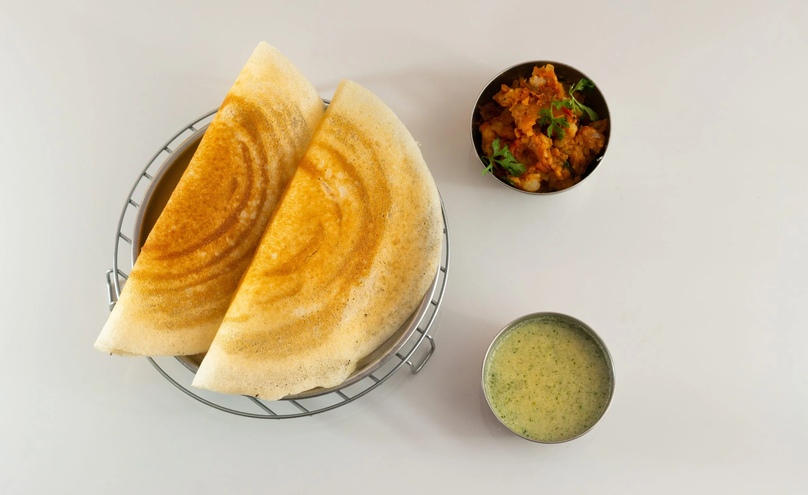

Dosa Recipe

Description
Dosa is a staple of south india, typically consumed for breakfast it is made out of rice batter, which is then roasted on a "tawa". It is usually consumed along with chutney as its side dish.
Ingredients
- 3 Cups idly raw rice
- 1 Cup idly boiled rice
- 1 Cup Whole Urad Dal
- 1 tsp Methi
- 2-3 tsp salt
Steps
- Add 3 Cups idly raw rice, 1 Cup idly boiled rice, 1 tsp methi in a container and clean them using water
- Add water to the container containing the above ingredients and soak them for at least 4 hours
- Drain the water and grind the mixture in a mixie or a grinder to obtain dosa batter
- Let the dosa batter soak overnight, so that it ferments and swells up
- On the next day, add some 2-3 tsp of salt for your required amount of batter and mix them well
- Place your tawa on stove and let it heat for a few minutes, apply some oil over the tawa
- Once the tawa is heated, take the batter in a spatula and pour it on the tawa and start making concentric circles in-order to spread the dosa evenly
- Once spread evenly and thinly, close the tawa with a lid and wait for ~2 minutes
- Take off the lid, and flip the dosa with a flat stick, the dosa should appear golden brown (in case the dosa is dark brown/ black it got roasted too much, reduce the amount of time you let the batter roast next time)
- Repeat the same for the other side,and take it off once it is golden brown
- Voila!You're Dosa is now ready! it's best to consume it with chutney or sambar.